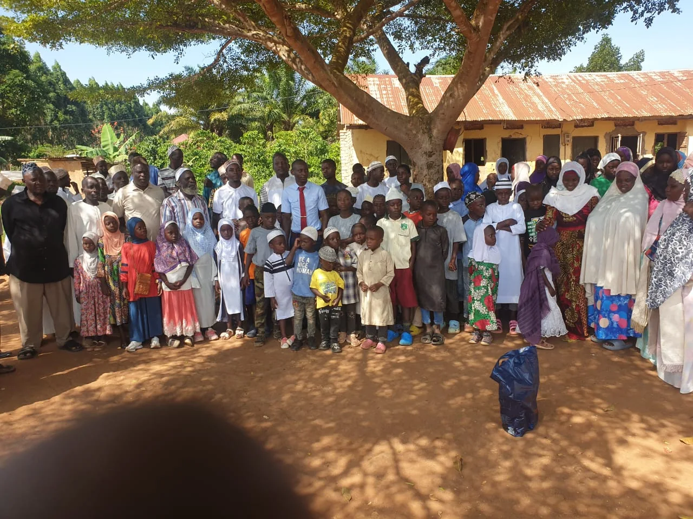
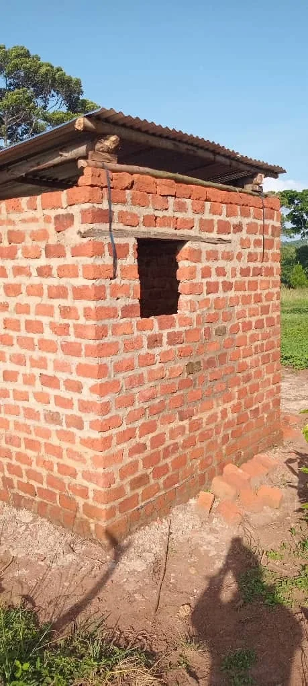

Mission
To support people and communities through compassionate, practical and dignity-centered action, while creating opportunities for participation and stronger local relationships.
A clear, human introduction to Muhamadi R Charity Foundation Uganda — written from the supplied visual materials and intentionally free of unverified institutional claims.
Muhamadi R Charity Foundation Uganda is presented here as an organization committed to charitable support, outreach and human dignity.
The available photographs show community gatherings, practical assistance, children and families, outreach activities and people participating together. They provide the visual foundation for this website while official written organizational details are still being added.


To support people and communities through compassionate, practical and dignity-centered action, while creating opportunities for participation and stronger local relationships.
A future where communities are better equipped to face hardship, protect human dignity and create pathways toward hope and opportunity.
Responding to people with empathy, care and respect.
Acting honestly and responsibly in how support is delivered.
Recognizing community members as participants, not passive recipients.
Looking beyond immediate assistance toward stronger local capacity.
A credible charity needs more than good intentions. It needs a disciplined approach to understanding needs, mobilizing support, communicating clearly and learning from experience.
Start with people and the needs they identify.
Coordinate practical resources and community relationships.
Provide support with dignity and care.
Capture lessons and improve future action.
Official history, registration details, leadership, communities served and verified impact figures can be added as the organization approves them.